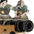

Requires
- Buildings:

- Religions:

Enables
- Units: 


Basic Building Statistics (can be modified by difficulty level, arts, skills, traits and retainers)
- Cost: 4000
- +3 trade routes possible (sea)
- +25 per turn to town growth from ports within this province
- Spreads Christianity to neighbouring provinces (+3 religious zeal)
- Converts the populace to Christianity (+6 religious zeal)
- Improves export capacity (increases trade values) by +200
- Recruitment capacity (ship under construction): +1
Description
Even the unwashed, unmannered and unwelcome can be useful.
A nanban quarter allows foreigners greater trade rights in a province, and a new trade route is there to be exploited. This relatively free exchange of goods and ideas can be profitable, and allows the construction of European ship designs in the local yards. The nanban trade between the "southern barbarians" and the Japanese existed from 1543 until the Tokugawa Shoguns closed the country to foreign disturbances in 1641. The Portuguese, who had first opened trade with Japan, were also the first to be excluded. They had, after all, brought a fairly aggressive form of Catholicism, in the form of the Jesuits, to Japan. The Dutch managed to hang on, but their presence was circumscribed and barely tolerated. Eventually they were confined to Dejima, an artificial island in Nagasaki Bay, although their guns were still welcome. Japan remained isolated from the outside world until the Convention of Kanegawa in 1854, a piece of not-quite-gunboat diplomacy by Commodore Matthew C. Perry of the US Navy.